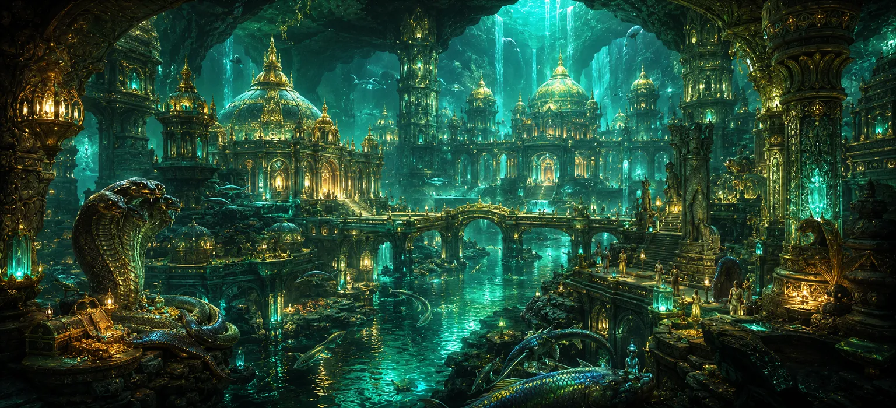

पाताल लोक
नैतिक नैतिकता और मानवतावादी दान से लेंस का विस्तार करते हुए, उमा संहिता का अध्याय 15 ब्रह्मांडीय भूगोल के अद्भुत विस्तार में गहराई से उतरता है पाताल लोक वर्ण-पाताल लोक की विस्तृत खोज। शिव पुराण के भव्य ब्रह्मांड विज्ञान में, अस्तित्व नश्वर इंद्रियों द्वारा अनुभव किए गए स्थलीय स्तर तक ही सीमित नहीं है। पृथ्वी की सतह के नीचे सात शानदार भूमिगत क्षेत्र हैं, जिन्हें सामूहिक रूप से पाताल के नाम से जाना जाता है, जो समृद्धि, वास्तुशिल्प वैभव और रहस्यमय चमत्कारों में स्वर्गीय स्वर्ग के प्रतिद्वंद्वी हैं।
यह अध्याय यह बताकर आम गलतफहमियों को दूर करता है कि पाताल निराशा या सजा का क्षेत्र नहीं है, बल्कि स्वयं-चमकदार रत्नों से प्रकाशित एक असाधारण जीवंत क्षेत्र है, जिसमें दिव्य नागों (नागों), दैत्यों, दानवों और सिद्ध प्राणियों का निवास है जो दिव्य ब्रह्मांडीय प्रशासन के तहत सर्वोच्च भौतिक सुखों का आनंद लेते हैं।
भूमिगत क्षेत्र के आश्चर्य
स्व-चमकदार रत्न
भूमिगत क्षेत्र दीप्तिमान रत्नों से जगमगाते हैं जिससे सौर प्रकाश की आवश्यकता समाप्त हो जाती है।
दिव्य वास्तुकला
मास्टर बिल्डरों द्वारा तैयार किए गए भव्य महल, बगीचे और त्रुटिहीन संरचनाएँ।
नागाओं का निवास स्थान
दिव्य आभूषणों और अद्वितीय ज्ञान से सुशोभित शक्तिशाली नाग राजाओं का घर।
रहस्यमय जल और नदियाँ
भूमिगत जलधाराएँ हरे-भरे पारिस्थितिकी तंत्र और अद्वितीय परादीसीय वनस्पतियों का पोषण करती हैं।
दैवीय सुरक्षा
विभिन्न स्तरों पर संतुलन और शांति सुनिश्चित करने वाले ब्रह्मांडीय कानूनों द्वारा शासित।
स्थूल ब्रह्माण्डीय सामंजस्य
यह भगवान शिव की सार्वभौमिक रचना की विशाल बहुस्तरीय संरचना को दर्शाता है।
इस पाठ में मुख्य विषय
सात पाताल लोकों का संरचनात्मक ब्रह्मांड विज्ञान
यह खंड उमा संहिता में वर्णित ब्रह्मांड के बहुस्तरीय भूगोल का परिचय देता है। सांसारिक क्षेत्र (भूर लोक) के नीचे सात अलग-अलग भूमिगत परतें हैं, जिनमें से प्रत्येक अद्वितीय भौतिक विशेषताओं, वास्तुशिल्प चमत्कारों और ब्रह्मांडीय अध्यादेश द्वारा नामित विशिष्ट संप्रभु शासकों के साथ नीचे की ओर फैली हुई है।
अराजक या बंजर होने से दूर, ये पाताललोक आश्चर्यजनक सटीकता के साथ संरचित हैं। वे दैवीय रचना की अविश्वसनीय विविधता का प्रदर्शन करते हैं, यह साबित करते हुए कि जीवन और शानदार सभ्यताएँ सामान्य मानव आंखों के लिए अदृश्य आयामों में पनपती हैं।
अटाला, विटाला और सुताला क्षेत्र की खोज
धर्मग्रंथ ऊपरी तीन निचले क्षेत्रों का क्रम से विवरण देता है। बाला (माया दानव की रचना) द्वारा शासित *अटाला*, अपने रहस्यमय रासायनिक तरल पदार्थों के लिए मनाया जाता है जो अत्यधिक शारीरिक शक्ति प्रदान करते हैं। *विटला*, जिसकी देखरेख भगवान शिव हाटकेश्वर के रूप में करते हैं, स्वर्ण खनिज संपदा और आध्यात्मिक ऊर्जा से भरपूर है।
*सुताल* प्रसिद्ध रूप से कुलीन और धर्मात्मा राजा बाली द्वारा शासित है। सांसारिक स्वर्ग पर संप्रभुता खोने के बावजूद, बाली ने सर्वोच्च ऐश्वर्य के साथ सुतल पर शासन किया, सीधे दैवीय कृपा से आशीर्वाद प्राप्त किया और सत्य और धर्म के प्रति अपने अटल पालन के लिए सम्मानित किया गया।
तलातला, महताला, रसाताला, और पाताल उचित
भूमिगत वास्तुकला में गहराई से आगे बढ़ते हुए, पाठ माया के क्षेत्र *तलताला* का वर्णन करता है; *महताल*, कई फन वाले दिव्य नागों का विशाल निवास; *रसातल*, उग्र लेकिन महान दैत्यों और दानवों का घर; और अंत में *पाताल* (या उचित नागा-लोक), ताजपोशी भूमिगत राजधानी।
पाताल में, वासुकी, तक्षक और शेष जैसे नाग राजा चमकते रत्नों से जड़े शानदार महलों में रहते हैं, जो भूमिगत विस्तार को रोशन करते हैं, क्रिस्टल-स्पष्ट नदियों और भव्य हॉलों में एक नरम, शाश्वत गोधूलि चमक बिखेरते हैं।
नीदरलैंड के निवासियों का वैभव और जीवनशैली
उमा संहिता में कहा गया है कि पाताल लोक में रहने वाले प्राणी नश्वर लोगों से कहीं अधिक भौतिक सुखों का अनुभव करते हैं। वे बीमारी, थकान, या कठोर उम्र बढ़ने की प्रक्रियाओं से अछूते हैं जो सांसारिक अस्तित्व को प्रभावित करते हैं, कला, संगीत और दिव्य सद्भाव से भरे लंबे जीवनकाल का आनंद लेते हैं।
हालाँकि, उनकी अपार समृद्धि के बावजूद, पाठ इस बात पर ज़ोर देता है कि ये क्षेत्र अभी भी भौतिक अस्तित्व के चक्र के भीतर बंधे हुए हैं, और साधकों को याद दिलाते हैं कि सच्ची शांति और मुक्ति सबसे शानदार दिव्य या भूमिगत भौतिक साम्राज्यों से भी परे है।
सभी स्तरों पर भगवान शिव की सर्वव्यापी कृपा
इस भौगोलिक प्रवचन में बुना गया एक गहन आध्यात्मिक पाठ यह है कि भगवान शिव की दिव्य उपस्थिति ब्रह्मांड के हर स्तर में व्याप्त है। सर्वोच्च भगवान के मंदिर, मंदिर और गूढ़ रूप भूमिगत गहराई में भी स्थापित हैं, जिनकी पूजा नागाओं और दिव्य प्राणियों द्वारा समान रूप से की जाती है।
यह मूलभूत वेदान्तिक सत्य को पुष्ट करता है कि अस्तित्व में ईश्वर से रहित कोई स्थान नहीं है। चाहे दिव्य ऊंचाइयों पर हों, सांसारिक मैदानों में हों या भूमिगत गहराइयों में, शिव चेतना का प्रकाश अनंत काल तक चमकता रहता है।
भूमिगत दुनिया से उच्चतर ब्रह्मांडीय लोकों में परिवर्तन
सात पाताल लोकों के भूमिगत चमत्कारों की रूपरेखा तैयार करने और दैवीय शासन के सार्वभौमिक दायरे को स्थापित करने के बाद, उमा संहिता सबसे गहरी गहराई से चमकदार दिव्य क्षेत्रों और ऊपरी स्थूल जगत के संरचनात्मक विमानों की ओर चढ़ने की तैयारी करती है।
यह अगली खोज के लिए मंच तैयार करता है, जो पवित्र पाठ के बाद के अध्यायों में निर्बाध रूप से आगे बढ़ता है, जहां शास्त्र भगवान शिव की कृपा के तहत सृजन, भक्ति और मुक्ति के अंतिम मार्गों की लुभावनी मैपिंग जारी रखता है।
आध्यात्मिक अंतर्दृष्टि
अध्याय 15 हमें याद दिलाता है कि भगवान शिव द्वारा बनाया गया ब्रह्मांड असीम रूप से विशाल, बहुआयामी और अत्यंत सटीकता के साथ व्यवस्थित है। भूमिगत क्षेत्र और दिव्य ऊंचाइयों दोनों की खोज करके, हम अपनी चेतना का विस्तार करते हैं, संकीर्ण सीमाओं को त्यागते हैं और वास्तविकता के सभी आयामों में काम करने वाली दिव्य महिमा को पहचानते हैं।
अक्सर पूछे जाने वाले प्रश्न
① पौराणिक भूगोल में पाताल लोक क्या हैं?
पाताल लोक में पृथ्वी के तल के नीचे स्थित सात शानदार भूमिगत क्षेत्र शामिल हैं, जो अद्भुत वास्तुकला, चमकते रत्नों और समृद्ध दिव्य पारिस्थितिकी तंत्र की विशेषता रखते हैं।
② क्या पाताल को अंधकारमय या सज़ा का स्थान माना जाता है?
आम गलत धारणाओं के विपरीत, पुराणों में पाताल लोकों का वर्णन भव्य महलों, दिव्य प्राणियों, नागाओं और सांसारिक क्षेत्रों से भी अधिक विशाल भौतिक वैभव से भरे हुए भव्य, चमकदार क्षेत्रों के रूप में किया गया है।
③ शिव पुराण में भूमिगत ब्रह्मांडीय भूगोल का विवरण क्यों दिया गया है?
स्थूल सृष्टि का विवरण भगवान शिव की अभिव्यक्ति के असीमित विस्तार को दर्शाता है, जो साधकों को याद दिलाता है कि अस्तित्व का हर स्तर दिव्य ब्रह्मांडीय कानून के तहत संचालित होता है।